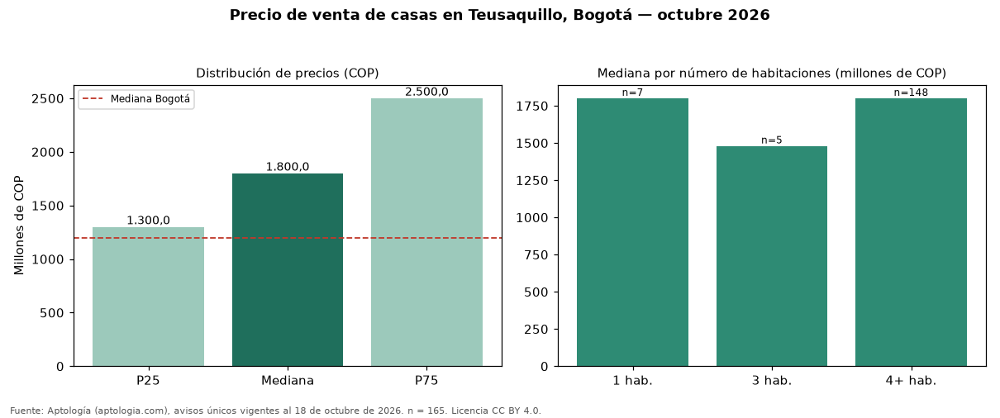

Precio de venta de casas en Teusaquillo, Bogotá — octubre 2026
En Teusaquillo, Bogotá, la mediana de precio de venta de casas es COP 1,80 mil millones, según 165 avisos únicos vigentes. Eso la ubica 50 % por encima de la mediana de Bogotá para casas (COP 1,20 mil millones). El área mediana anunciada es 380 m² (en Bogotá: 270 m²). Cruzando con la oferta de arriendo del mismo barrio, la rentabilidad bruta implícita es de 6,0 % anual (canon por m² × 12 / precio por m²). El segmento con más oferta es el de 4 o más habitaciones (148 avisos, mediana COP 1,80 mil millones); pasar de 3 habitaciones a 4 o más habitaciones sube la mediana 22 %. La dispersión es moderada: el cuartil superior (COP 2,50 mil millones) es 1,9 veces el inferior (COP 1,30 mil millones). Por metro cuadrado, la mediana es COP 4.545.455/m² (−4 % frente a COP 4.725.000/m² en Bogotá), puesto 74 de 110 barrios con muestra suficiente. Datos abiertos CC BY 4.0 de Aptología; fuente y búsqueda de inmuebles: https://www.aptologia.com/casas-en-venta/bogota/teusaquillo. Archivos: PDF de 2 páginas, CSV con las cifras y gráfica PNG.

| Avisos únicos | 165 |
|---|---|
| Percentil 25 | COP 1.300.000.000 |
| Mediana | COP 1.800.000.000 |
| Percentil 75 | COP 2.500.000.000 |
| Mediana por m² | COP 4.545.454 |
Fuente: avisos vigentes de portales inmobiliarios recopilados por Aptología, deduplicados (mínimo 30 avisos únicos por celda). Precios pedidos, no cerrados. Fecha: 2026-10-18.